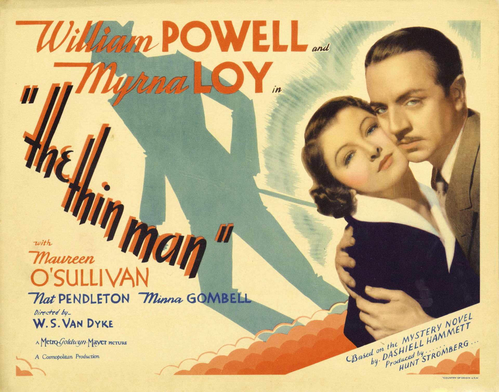
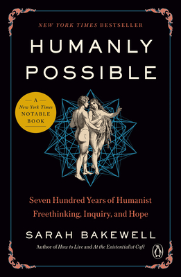

Herb's Blog:
The Latest Announcements, Pronouncements & Prognostications
Take these for what you will: these are items of at least some little importance to me, but not necessarily of great interest to others. An Atom web feed is available, for those who may be interested.
Released Notenik Version 18.7.0
Massaged the title parser a bit more to respect embedded HTML line breaks, but mostly this release gets Notenik a little bit closer to being useful for preparing and delivering a presentation (aka “slide deck”).
link: notenik.app/kb/version-18.7.0.html
24 Mar 2026
Published “On The Passing of Paul Ehrlich”
For some he seemed to be a hero, while others considered him to be a demon. Let’s dive below the surface to see if we can unearth a more nuanced view.
link: hbowie.net/writings/on-the-passing-of-paul-ehrlich.html
21 Mar 2026
Released Notenik Version 18.6.0
Added an optional menu bar extra (for the right side of the menu bar); fixed limited Markdown parsing of the Title field to leave underscores within words undisturbed.
link: notenik.app/kb/version-18.6.0.html
08 Mar 2026
Published “Why AI is Different”

Eight ways in which AI is different from prior tech advances. My most surprising conclusion: “AI is effectively a societal regression from information agriculture to information foraging.”
link: hbowie.net/writings/why-ai-is-different.html
05 Mar 2026
Released Notenik Version 18.5.0
Fixed an image-related bug in the Web Book Export as Site function; Eliminated unnecessary image icons in menu items; Added option for resolving relative wiki links when using the Share with Options function; Refinement of styling handling in note titles; Refinement of file naming to accommodate some meaningful punctuation characters.
link: notenik.app/kb/version-18.5.0.html
23 Feb 2026
Published The Value of Autonomy
I think we all understand instinctively why some degree of autonomy is important to every human: freedom feels good, and constraints often feel stifling and restrictive. But why is autonomy important to our species? Why, in other words, did we humans evolve to value autonomy, and to so regularly exercise it?
link: abouthumans.net/the-value-of-autonomy.html
23 Feb 2026
Published An Appreciation for The Thin Man

In my judgment, this is one of those rare cases where the film is actually better than the book, without sacrificing much of value from the written text. I’ve watched the film repeatedly over the years and my appreciation for it has only grown with each viewing.
link: hbowie.net/writings/an-appreciation-for-the-thin-man.html
23 Feb 2026
Finished reading Humanly Possible: Seven Hundred Years of Humanist Freethinking, Inquiry, and Hope by Sarah Bakewell

An informative, enlightening and interesting account of the history of humanistic thought, introducing us to many of the significant figures originally giving voice to such ideas.
rating: ★★★★★
link: literatibookstore.com/book/9780735223394
12 Feb 2026
Published “My Education in Racial Superiority”
I am, to all appearances, white, and my ancestry, as far as it can be determined, is mostly European.
But please don’t hold that against me.
link: hbowie.net/writings/my-education-in-racial-superiority.html
11 Feb 2026
Released Notenik Version 18.4.0
Provided a way to use subfolders, but specify some that should not be treated as Notenik collections (in response to a user request). Plus some other minor refinements.
link: notenik.app/kb/version-18.4.0.html
10 Feb 2026
Published “Over Seventy Important Things”
My new web book, at AboutHumans.net, now catalogs over seventy Important Things to Know About Humans! This is a crazy number, because we usually oversimplify our understandings of our own natures to fit into some straightforward models. But we are complex beasts!
link: abouthumans.net/over-seventy-important-things.html
30 Jan 2026
Released Notenik Version 18.3.0
Various and sundry improvements including some new/enhanced provisions for outlining. Also a new starter pack focused on use of the PARA organizational method (making good use of outlining).
link: notenik.app/kb/version-18.3.0.html
29 Jan 2026
Published “New Speedway Boogie”
“New Speedway Boogie” is a song prompted by the tragedy at Altamont over fifty years ago, but it has plenty of meaning for us today as well.
link: hbowie.net/writings/new-speedway-boogie.html
16 Jan 2026
Released Notenik Version 18.2.0
Added new Markdown commands to generate useful HTML head metadata when exporting a Web Book as a site.
link: notenik.app/kb/version-18.2.0.html
07 Jan 2026
Released Notenik Version 18.1.0
Additional improvements targeted on web book publishing.
link: notenik.app/kb/version-18.1.0.html
12 Dec 2025
Finished reading The Hunter by Tana French
This is a sequel to The Searcher, featuring the same characters. Pretty good, but not quite as fun as the first book, since we already know the main characters, and they don’t evolve a whole lot in this book.
rating: ★★★
link: www.theguardian.com/books/2024/mar/11/the-hunter-by-tana-...
01 Dec 2025
Released Notenik Version 18.0.0
Further improvements mostly focused on web book publishing.
link: notenik.app/kb/version-18.0.0.html
14 Nov 2025
Released Notenik Version 17.9.0
Some additional Tahoe refinements, plus some improvements for web book publishing.
link: notenik.app/kb/version-17.9.0.html
30 Oct 2025
Published “The Problem with AI Art”
Published a new piece on the problems I see with AI-generated “art”. The web is full of opinions on the subject, so I thought I would add my thoughts to the mix — with some original insights and observations, hopefully.
link: hbowie.net/writings/the-problem-with-ai-art.html
17 Oct 2025
Released Notenik Version 17.8.0
Fixed a few problems, and added an export scripting module, so that a web book can be exported via a Notenik script.
link: notenik.app/kb/version-17.8.0.html
14 Oct 2025